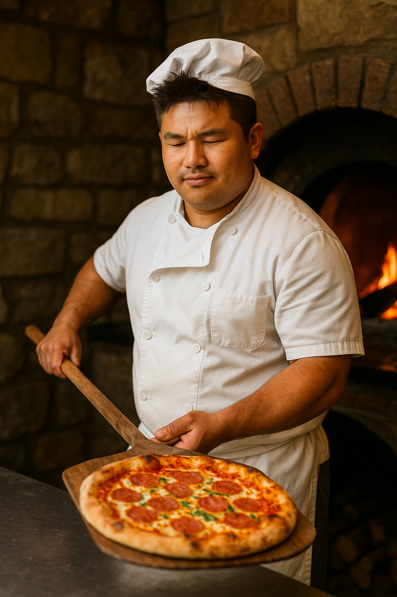

En Pizzería Ash creemos que cada pizza debe ser una aventura, llena de sabor y energía. Inspirados en la pasión por los viajes y el descubrimiento, combinamos recetas italianas con ingredientes frescos de la región para crear sabores que te harán sentir como si hubieras ganado una batalla. ¡Aquí cada bocado es una experiencia única que atrapa a cualquiera!

Chef Ash – Maestro Pizzero y Fundador 🔥 Apasionado por la cocina y los retos, Ash creó esta pizzería con la misión de llevar la pizza a otro nivel. Su creatividad y espíritu aventurero hacen que cada especialidad tenga un toque único y memorable.
Chef Misty – Experta en sabores del mar 🌊 Con su frescura y estilo, Misty aporta las combinaciones marinas que hacen que nuestras pizzas de mariscos sean irresistibles, frescas y llenas de energía.
Chef Brock – Especialista en masas y horneado 🪨 Brock es quien cuida que cada masa tenga la consistencia perfecta. Su dedicación al horno asegura una base dorada, crujiente y ligera, digna de una pizza legendaria.
Ofrecer una experiencia gastronómica divertida y llena de sabor, donde cada pizza sea tan especial como un Pokémon inicial, brindando momentos inolvidables para toda la familia.
Convertirnos en la pizzería temática favorita de la región, uniendo la pasión por la pizza con la emoción del mundo Pokémon, donde cada visita sea una nueva aventura.